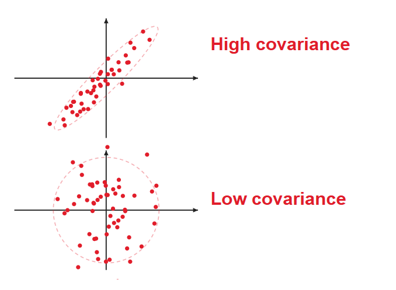

Introduction to the course:
Estimation, Identification and Stochastic Filtering
SEL5917
August 04, 2026

- Slides;
- Class notes;
- Matlab scripts;
- References, etc...
Definition:
A sample space $\Omega$ is a non-empty set whose elements
$\omega\in\Omega$ are called outcomes (or sample points). A subset
$A\subseteq\Omega$ that we wish to assign a probability is called an
event. When $\omega\in A$ we say the event $A$ occurs.
Example: a dice
$$
\Omega = \{1,2,3,4,5,6\}
$$

